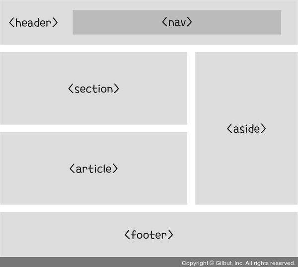
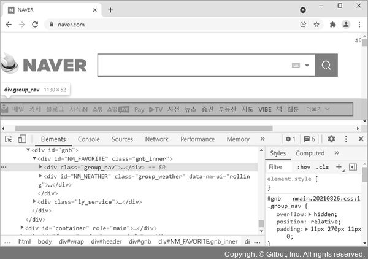
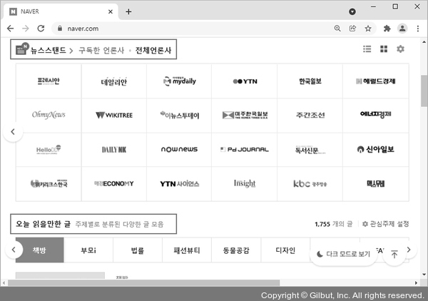
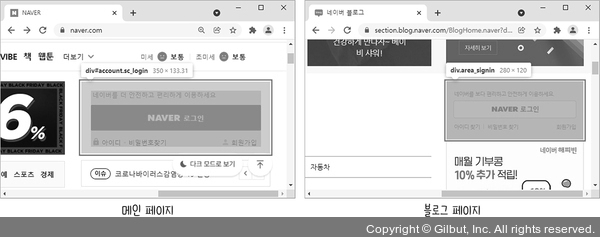
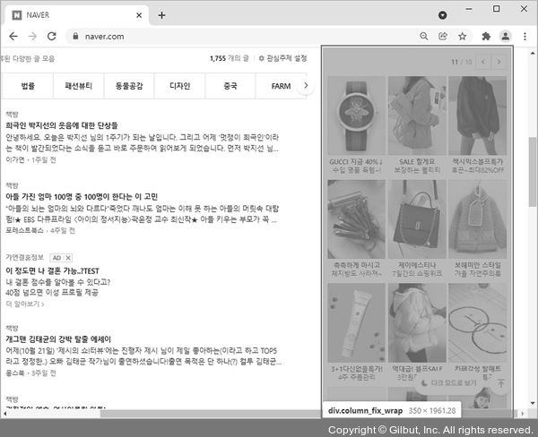

웹 페이지 구조를 설계하는 시맨틱 태그
- 시맨틱 웹 : 기계도 이해할 수 있도록 웹 페이지를 더욱 의미있게 설계한 웹
(시맨틱 태그를 최대한 사용해 HTML 문서를 의미론적으로 설계하는 것이 중요)
- 시맨틱 태그 : 이름만으로 태그의 용도나 역할에 대한 의미가 명확한 태그
- 시맨틱 태그 예 : table, form a 태그
- 논시맨틱 태그 예 : div, span 태그
- 시맨틱 태그의 종류

nav 태그 : 웹 페이지에서 내부의 다른 영역이나 외부를 연결하는 링크 영역을 구분하는 데 사용
- 헤더 영역에서의 메뉴나 목차와 같은 요소가 많은데, 내부나 외부를 연결하는 링크가 전부 nav 태그일 필요는 없고, 웹 사이트의 주요 탐색 링크 영역만 포함하면 됨

section 태그 : 웹 페이지에서 논리적으로 관련 있는 내용 영역을 구분할 때 사용
- 보통 section 태그는 내용의 제목을 나타내는 hn 태그 중 하나를 포함

article 태그 : 웹 페이지에서 독립적인 영역을 구분할 때 사용
- section 태그는 웹 페이지 안에서 관련 있는 내용을 구분하고, article 태그는 어떤 웹 페이지에서든 독립적으로 사용될 수 있는 영역을 구분한다는 차이점이 있음
예를 들어 로그인 영역은 메인 페이지에서도 사용하지만, 블로그 페이지 등에서도 사용하므로 article 태그로 구분하면 좋음

aside 태그 : 웹 페이지 안에서 주력 내용이나 독립적인 내용으로 보기 어려워서 article 태그나 section 태그로 영역을 구분할 수 없을 때 사용

main 태그 : 웹 페이지의 주요 내용을 지정할 때 사용
- main 태그에는 문서에서 반복해서 등장하는 요소를 포함해선 안 됨
- main 태그를 article, aside, footer, header, nav 태그의 하위에 포함할 수 없음